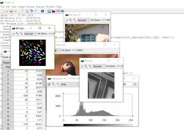
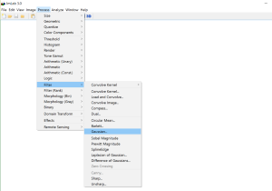
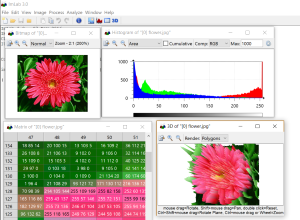
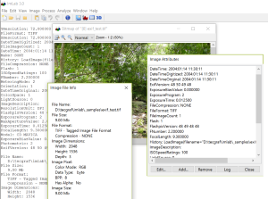
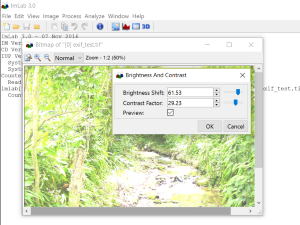
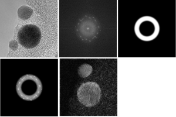
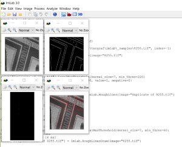
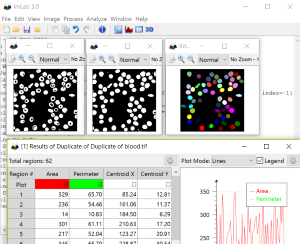

|
 ImLab Overview |
 Overview of the Process Menu |
|
 Bitmap View, Histogram View, Matrix View and 3D View |
 Image Information, Image Attributes, and Log |
|
 Processing Preview |
 Fourier Transform Filtering
imlab["au.tif"] = imlab.LoadImage{filename="\imlab\_samples\au.tif",
index=-1}
imlab["au.tif"].FFT{} imlab["Duplicate of au.tif"] = imlab.Duplicate{image="au.tif"} imlab["Duplicate of au.tif"].ConvertDataType{datatype="float", cpx2real="Magnitude", gamma=0, abssolute=0, cast_mode="Scan MinMax"} imlab["Duplicate of au.tif"].RenderWheel{in_radius=80, ex_radius=110} imlab["Duplicate of au.tif"].GaussianConvolve{stddev=5} imlab["au.tif"].ArithmeticOp{image="Duplicate of au.tif", op="a * b"} imlab["au.tif"].IFFT{} imlab["au.tif"].ConvertDataType{datatype="float", cpx2real="Magnitude", gamma=0, abssolute=0, cast_mode="Scan MinMax"} imlab["au.tif"].ToneGamut{op="Brightness And Contrast", param={47.6913, 0}} |
|
 Hough Lines Transform Application
imlab["8255.tif"] = imlab.LoadImage{filename="\imlab\_samples\8255.tif",
index=-1}
imlab["8255.tif"].Canny{stddev=2} imlab["8255.tif"].Threshold{level=90, value=1, negative=0} imlab["HoughLines of 8255.tif"] = imlab.HoughLines{image="8255.tif"} imlab["HoughLines of 8255.tif"].LocalMaxThreshold{kernel_size=7, min_thres=60} imlab["HoughLinesDraw of 8255.tif"] = imlab.HoughLinesDraw{image="8255.tif"} |
 Image Analysis and Measure
imlab["blood.tif"] = imlab.LoadImage{filename="\imlab\_samples\blood.tif",
index=-1}
imlab["blood.tif"].PercentThreshold{level=111, negative=0} imlab["blood.tif"].FillHoles{} imlab["blood.tif"].RemoveByArea{connect=4, start_size=0, end_size=50} imlab["blood.tif"].FindRegions{connect=4, touch_border=0} |
{kind=link}
{kind=link}
{kind=link}
{kind=link}
{kind=link}
{kind=link}
{kind=link}
{kind=link}